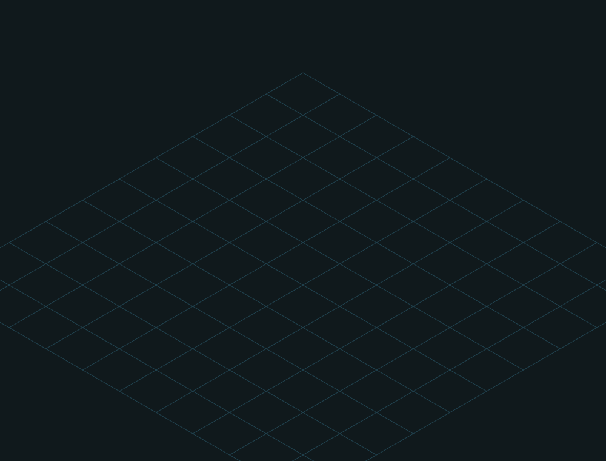
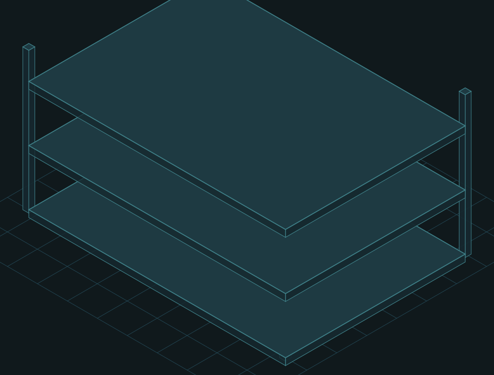
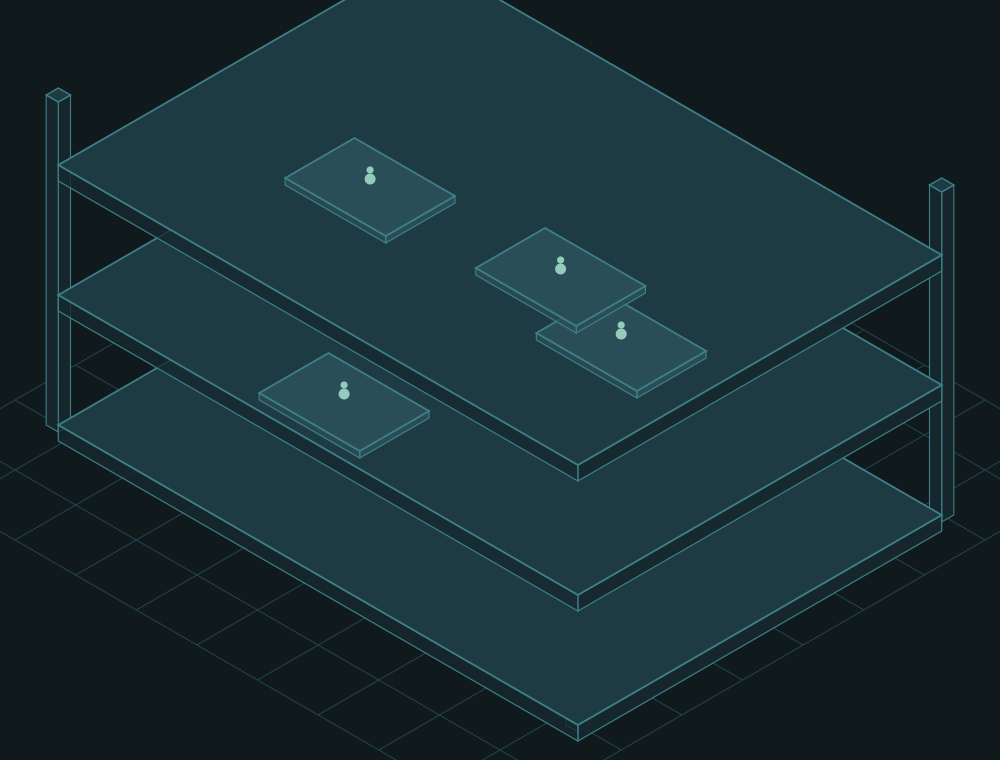
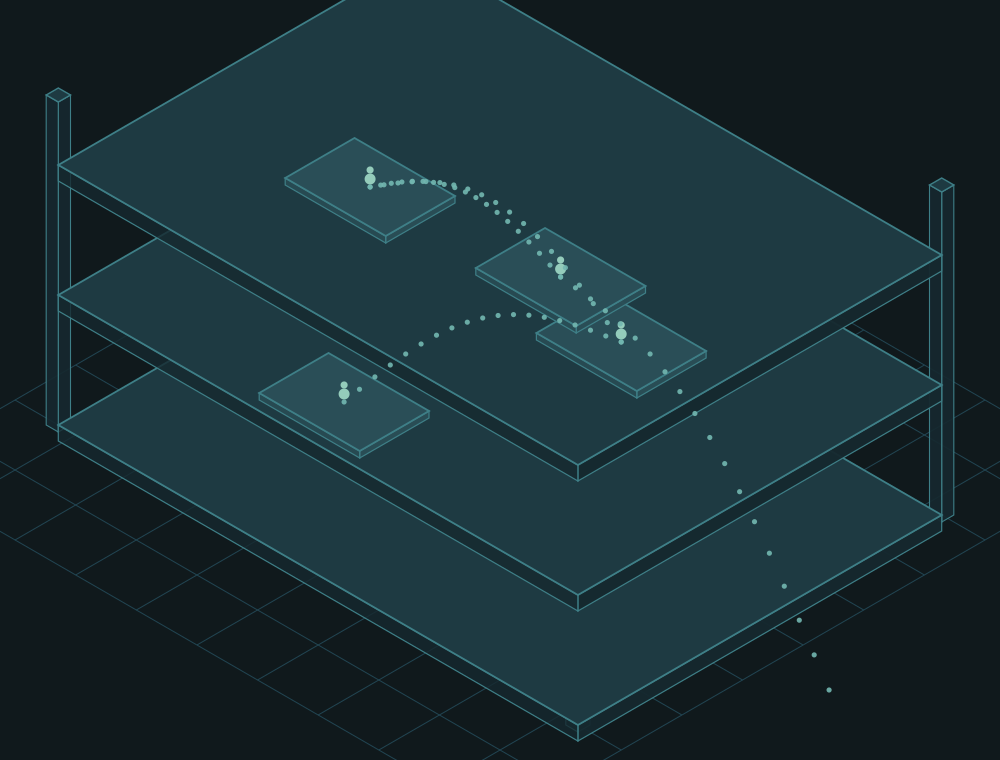
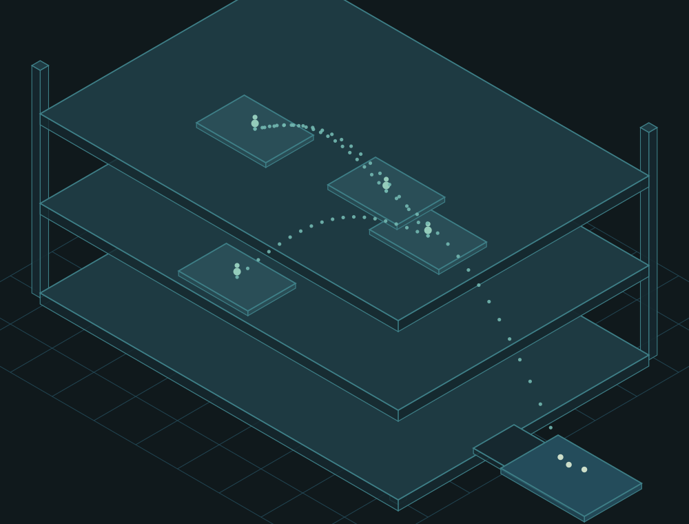

Cada cuadro agrega una capa y conserva las anteriores. Si una capa no se justifica sola, sobra.

CAPA 1 · BASE · La máquina tiene piso: la retícula da escala y horizonte.

CAPA 2 · ESTRUCTURA · Tres pisos, cuatro columnas, espesor visible: se ve el interior.CAPA 3 · ESTACIONES · Una plataforma por puesto. Cuatro en total, repartidas en los tres pisos.

CAPA 4 · OPERARIOS · Dos puntos cada uno. Diminutos contra la máquina: ahí está el argumento de escala.

CAPA 5 · RECORRIDO · La ficha va de puesto en puesto. Trayecto punteado, sin flechas.

CAPA 6 · BANDEJA · El último la deja acá. Tres fichas ya entregadas.